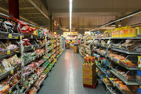

Er zijn vier verschillende uitgangspunten om aan de slag te gaan met culturele diversiteit in jouw werkomgeving.
Jouw profiel:

Scoor je hoog op Toegang?
Dan zie je culturele diversiteit als een commerciële asset voor de organisatie. Het is noodzakelijk om verbinding te houden met een steeds diverser wordende samenleving en een groeiende visvijver van talent. Je bent ervan overtuigd dat culturele diversiteit zorgt voor een verscheidenheid aan netwerken en kennis in de organisatie. Daarbij helpt het ook bij klantenbinding: een gezamenlijke culturele achtergrond zorgt al snel voor meer vertrouwen en een gemakkelijkere communicatie.
Wat is het effect van dit perspectief? Voor een organisatie is het essentieel om de mogelijkheden voor toegang tot markten, personeel en producten te verkennen en uit te breiden. Culturele diversiteit kan worden ingezet als een manier om het marktaandeel te vergroten en heeft een positieve invloed op de geloofwaardigheid van een organisatie. Het is mooi dat jij deze meerwaarde ziet en dat wilt benutten. Vaak zie je echter bij een focus op toegang dat diversiteit toeneemt in de lagere segmenten, maar dat de culturele diversiteit in de hogere segmenten van de organisatie achterblijft. Dit kan leiden tot segregatie in de organisatie.
In cultureel diverse wijken nemen organisaties actief vrouwen aan met een hoofddoek zodat zij de klanten met een islamitische achtergrond beter kunnen bedienen. De vraag is echter: Is diversiteit alleen nuttig op posities die direct in contact staan met de samenleving?
Wat zijn de uitdagingen van een focus op Toegang?
1. Door een focus op toegang tot externe markten is de inzet van culturele diversiteit slechts beperkt. Hierdoor vindt er intern in de organisatie vaak weinig uitwisseling plaats tussen medewerkers met verschillende culturele achtergronden. Dit kan leiden tot een scheiding tussen verschillende culturele groepen. Ook zorgt dit ervoor dat de meerwaarde van culturele verschillen in jouw werkomgeving niet worden benut omdat er voor medewerkers geen ruimte is voor afwijkende creatieve ideeën en om van elkaars perspectieven te leren.
2. Een selectieve focus op de commerciële voordelen van culturele diversiteit kan leiden tot weerstand: Medewerkers uit minderheidsgroepen kunnen het gevoel krijgen dat zij enkel worden aangenomen op basis van hun culturele achtergrond. Daarnaast is hun stem vaak niet vertegenwoordigd in de rest van de organisatie. Zo is er weinig culturele diversiteit in de hogere segmenten in de organisatie en de onderdelen waar besluitvorming plaatsvindt. Verder kunnen medewerkers uit de meerderheidsgroep het gevoel krijgen buitengesloten te worden. Ook kunnen zij onzeker worden over hun kwalificaties, wanneer er specifiek wordt ingezet op het werven van culturele minderheden voor bepaalde posities.
Om toegangsdoelen te bereiken is het belangrijk om meer te leren over het effectief inzetten van culturele verschillen in jouw werkomgeving. Je lees hier meer over bij het perspectief Leren. Je zou dit perspectief als middel kunnen gebruiken om de commerciële voordelen van culturele diversiteit in jouw werkomgeving optimaal te benutten. Klik hier om meer te lezen over de andere perspectieven: Kwaliteit, Rechtvaardigheid, Leren.